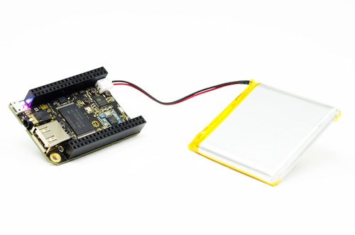

電源を入れる
Power Up
The single most important thing to using any electronic device is getting electricity to the right places. We’re going to cover how to turn CHIP “on”. This might seem so straightforward that it doesn’t deserve several paragraphs, but CHIP is pretty clever, so there’s actually a few things worth knowing.
何かしらの電子デバイスを使用するにあたって最も重要なことは、適切な箇所に電気を流すことです。
私たちは、CHIPをONにする方法についてカバーするつもりです。 これは、あえていくつかの段落に分ける必要のないほど簡単に思えるかもしれませんが、 CHIPはかなり賢いので、実際、知っておく価値のある事が幾つかあります。
何が必要？
What's It Need?
In general, CHIP is powered by a 5-volt source like a USB port or phone charger, and draws about 500mA peak (at boot time), runs on around 100mA, and rests with around 80mA with the processor totally unloaded. To make sure you have enough headroom, we recommend that you use a 5v power supply with at least 900mA current available. This may be more than you need to know if you just want to plug it in to the wall, but, as you build projects with CHIP, you'll be happy to know there's a lot of ways to get the electricity flowing.
一般に、CHIPは、USBポートやスマホ充電器などの５ボルト電源によって電力が供給され、 500mA辺りをピークとして（ブート時）、100mA周辺で動作し、プロセッサが完全にアンロードされた状態では80mA周辺で休止します。 十分なマージンを持っていることをはっきりさせたい場合、少なくとも900mAを供給できる5V電源を使用することをお勧めします。 これらは、壁のコンセントに繋ぐだけなら知っておく必要は無いかもしれません。 ただ、あなたがCHIPでプロジェクトを構築するなら、電力を得る方法がたくさんある事を知っていれば幸せになれるでしょう。
CHIPがONだと確認するには？
How Do I Know CHIP Is On?
CHIP is silent. It doesn't take much energy, so it's not very hot. It has no discernible smell. As a result, many of your senses are not great indicators that it is working. There are two LEDs next to the USB micro connector. When CHIP is on, you should see the
PWRLED light up nice and bright.
CHIPは無口です。
CHIPはエネルギーを多く使わないので、めっちゃ熱くなったりしません。
それとわかるような臭いもありません。
結果として、あなたの多くの感覚は、偉大な指標として機能しません。
micro-USB端子の横に、２つのLEDがあります。
CHIPがONのとき、あなたはPWRのLEDが明るく光っているのを確認できるでしょう。
壁の電源
Power From The Wall
The CHIP's microUSB connector is used to provide power from most any USB power source. USB wall-wart adapters are probably littered all over your house. If for some reason you don't have one, you can buy one at any electronics retailer. We recommend a 5V powersupply with at least 900mA current available. Just plug a USB-A-to-microUSB-B cable (that's the same cable most phones, tablets, and whatnot use to charge) into the wall-wart and CHIP, and you'll see the
PWRLED light up. This CHIP is using the power from a computer's USB port:
CHIPのmicro-USB端子は、ほとんど全てのUSB電源から電力を供給するために使用されます。
恐らく、ほぼ全ての人の家には、USBの電源アダプターが転がっていると思います。
もし何らかの理由でこれを持ってない場合でも、家電量販店で購入する事ができます。
私たちは、少なくとも900mAを供給できる5V電源をお勧めします。
USB-A/microUSB-B変換ケーブル（それは殆どのスマートフォンやタブレット、その他諸々を充電するものと同じケーブルです）を使って電源とCHIPを繋げると、PWRのLEDが明るく光るのを確認できるでしょう。
以下のように、CHIPはコンピュータのUSBポートの電力でも使うことができます。

バッテリー電源
Power From A Battery
CHIP can also be battery powered. Specifically, any single cell (1S) 3.7V Lithium Polymer (LiPo) battery with a 2-pin JST-PH 2.0mm end can be connected to the JST-PH socket.
CHIPはバッテリー電源でも動作します。 具体的にいうと、2ピン2.0mmピッチのJST-PH端子の付いた品単一セル(1S) 3.7V LiPoバッテリーを、JST-PHソケットに接続できます。

The JST can only plug it in one way: if you are having a hard time lining things up, turn it around! Needless to say, do not force the battery connector into the socket if something doesn't feel right!
What's really great is that if you plug in to a charger and plug in a battery, the battery will charge - all the power management is on CHIP itself. Roughly, it takes about four to six hours to charge a 3000 mAh LiPo battery from a 5V 1A power source. Also, our delightful little Power Management IC, the AXP209, handles pass-through power, so while on and charging a battery, CHIP is basically running on a un-interruped power supply -- If charge power fails, CHIP seamlessly switches onto battery power without shutting off.
JSTは一方向にのみそれを繋ぐことができます: もし繋ぐのに苦労している場合は、立ち戻りましょう！ 言うまでもなく、何かがしっくりこないのに、ソケットにバッテリーを繋ぐのを強制するものではありません。
本当に素晴らしいのは、充電器バッテリーに接続してバッテリーを接続することです。
バッテリーが充電され、すべての電源管理はCHIP自身の上で行われます。
5V1A電源で3000mAh LiPoバッテリーを充電するのに、大体4~6時間必要とします。
さらに、私たちの快適で小さな電源IC・AXP209は、通過する電力を処理し、バッテリーを充電しながらに動作するので、CHIPは基本的に無停電電源装置上で動作していることになります。
つまり、充電からの電力供給に失敗した場合でも、CHIPはシームレスにシャットダウンされるのではなく、バッテリー電源に切り替わります。